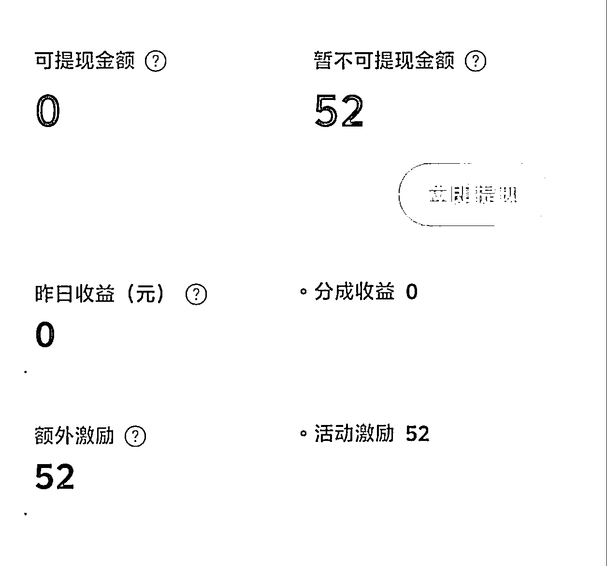
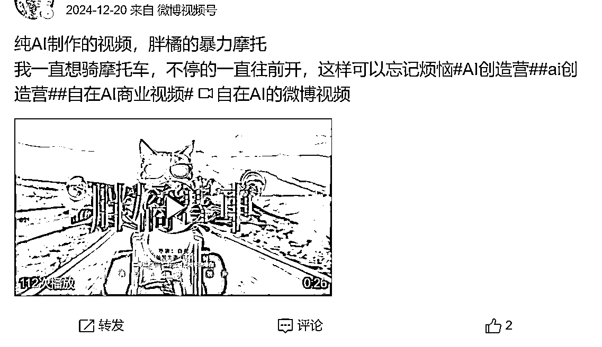
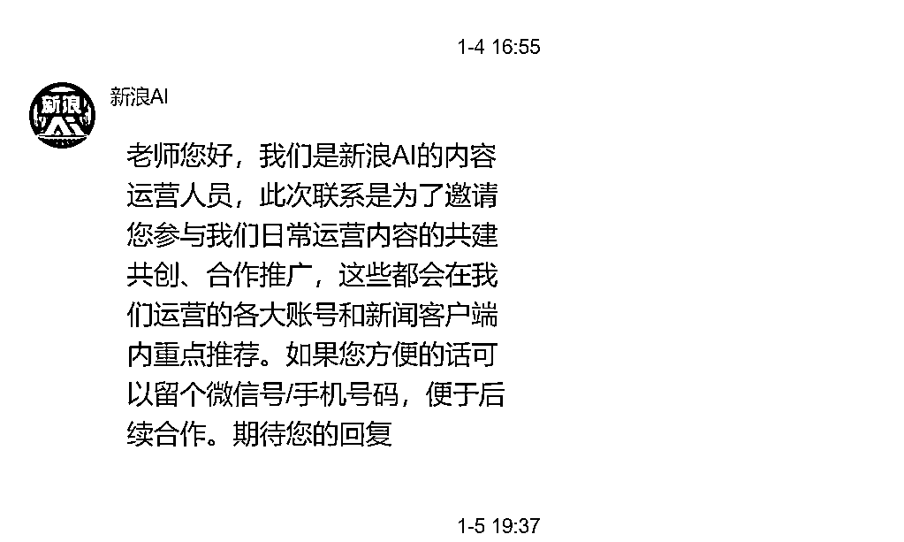
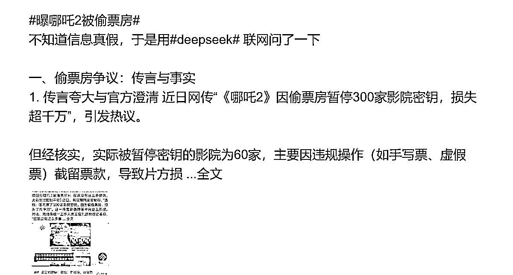
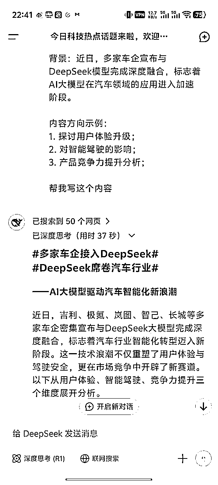

来源：https://nvztw3c0cgc.feishu.cn/docx/QBQ6dMDXyoArWExScCwczNFhnnf
大家好，自在来啦
我在微博变现虽然只有52元，但是给了我极大的信心。希望也能给你们带来信心。
为什么想写这篇内容，因为我觉得在短期内正反馈特别重要。前两天在群里报喜，当时粉丝是4000+，这两天又涨了啊。

前几年，想做微博，于是报了一个微博写作课，连续半年发微博，只涨粉三十几个。
去年开始做AI自媒体账号，想着微博也可以发啊，于是参加了微博活动，在2024年12月20号，开始发关于AI的内容。

在1月4号收到官方的邀请(可能每个人都有)

然后就是每天发微博，1—10条不等
累计涨粉6600+，其中最多一天涨粉1800+，单篇微博阅读量15万+，也有微博获得过官方的转发。
下面结合去年报课学到的，加上自己这一个多月的感悟，说一下微博的操作办法。
我们在其他平台，学到的起名方法，正常都是行业领域+名字，比如卖房的小张，保险红姐之类的。
这种正常说是对于小白，别人一看你账号名就知道是做什么的。但在微博，最好不要这么起名字，起一个通俗易懂的就行，不要加具体的细分领域。
我的名字是加了一个AI，这样也不怎么好，为什么呢？
因为在微博，内容审核是最松的，你起一个带有行业属性的名字，比如是爱美食的自在，你就只能发关于美食的内容。你要是发其他内容，比如明星娱乐、科技、法律之类的，粉丝就会认为你不务正业。
你起一个名字，比如叫自在，那么你就可以随便发什么内容，当然发垂直的领域更好，这样做的主要目的是，以后你要换赛道，很容易转变过来。反正就是在微博，就直接起名，不要加垂直赛道的内容，会比加垂直赛道的名字更好。
而且现在，领域+名字，太像营销号了，在微博，尽量让人看起来像活生生的人。你在其他大V下留言，大V一看你的名字，即使你不是恶意引流的，对你的印象也不好。如果把你拉黑了，对你的账号会有影响，如果拉黑你的人多了，那么账号就废了。
想一想你以后是企业家、名人、著名作家，你会怎么用你的名字。
军事类的、时政类的、读书类的，这三方面粉丝基础少，你要是兴趣在这块，做也可以。
首先，不管在哪写，一定要让大家看的舒服，不管写的这么样，排版一定要好。

最简单的就是学会分段分行，微博在手机展示的内容会有6--8行，如果你写的多，要在6--8行留下大家愿意点进去看的“钩子”，当然了，我们也不用这么刻意，但我们可以把在其他平台的写作技巧用在微博里。
什么开幕雷击之类的。
第二、注意标点符号的使用
该句话就句号，不要舍不得用。一直逗号，看的也累。还有就是要注意中文的标点符号和中文的标点符号，不要混着使用。
第三、开头讲故事
有趣的故事永远是吸引人的，别人会更容易看下去。
不会写故事这么办，有AI啊，把你写的内容发给AI，让它加个故事，这不难吧?
第四、蹭热点
微博首页有很多热点，直接找你感兴趣的，加上话题词就行。每次1-3个话题词就行。
第五、结合AI
任何行业、任何内容，都可以结合AI。现在deepseek很火，热度不断。
以前是AI+万物，现在是deepseek+万物。
我就蹭deepseek的热点，涨了一千多粉丝。
而且我的微博长内容，基本上都是AI写的，有时用deepseeek，有时用点点，有时用豆包等等。
不要去追求那些看起来很厉害的提示词，现在AI的发展，简单的话语，AI就可以很好的理解。
比如我这个，直接让它写内容就行了。

你能和人能有清楚的表达，和AI对话就没问题。在特定场景才会用到一些有技巧的提示词。
1、多参加官方活动
2、坚持日更，不断更，把微博当作你的朋友圈发，不难吧
3、有自己独立思考的能力
想蹭热点和用AI写，都是取巧的办法，我们可以取巧，但不能一直取巧。
必须要有自己独立的见解，有自己的思考能力。虽然AI很强大，但不能让AI磨灭了我们的思考能力。
给大家推荐几本书，也是我的老师推荐给我的，锻炼自己的思维能力。
按顺序读
《清醒思考的艺术》、《思考的力量》、《学会提问》、《超越感觉》、《麦肯锡教我的写作武器》、《结构化思维》
最后，希望大家在AI时代，多输出，多输出是当代的红利，是普通人逆袭的机会。